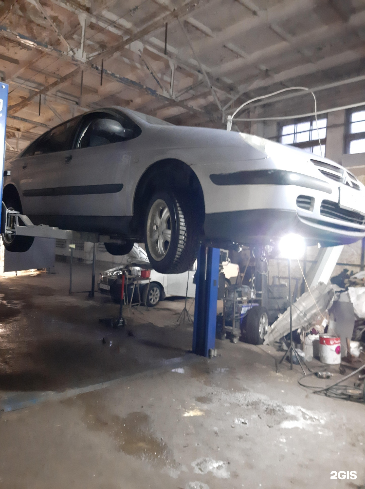

Центр
Lion
Ремонт автомобиля и кузовные работы
+7 (911) 279-77-87ТелефонХодовая часть, бензиновый двигатель, кузовной ремонт и сварка. Позвоните, чтобы обсудить нужные работы.
Адрес
Псков, Советская улица, 51
Часы работы
Пн–Вс 09:00–22:00
Демо-концепт · текущий прайс ещё не подтверждён
Направления
С чем можно обратиться
Сварочные работы
Уточняйте по телефонуТюнинг
Уточняйте по телефонуЗамена масла
Уточняйте по телефонуКузовной ремонт
Уточняйте по телефонуРемонт бензиновых двигателей
Уточняйте по телефонуПрайс
Услуги и цены
Фотографии
Фотографии из бокса
Фотографии из карточки бизнеса. Снимки не подтверждают актуальность цен.

Отзывы
Что отмечают посетители
В одном из отзывов посетитель положительно оценил выполненный ремонт.
Полный отзыв в 2ГИСВ других отзывах встречаются положительные оценки работы мастеров.
Полный отзыв в 2ГИСПересказ субъективных мнений без имён авторов. Полные отзывы — в 2ГИС.
Контакты
Адрес и связь
Часы работы
Пн–Вс 09:00–22:00
Телефон+7 (911) 279-77-87
Уточните нужный ремонт по телефону
Позвонить